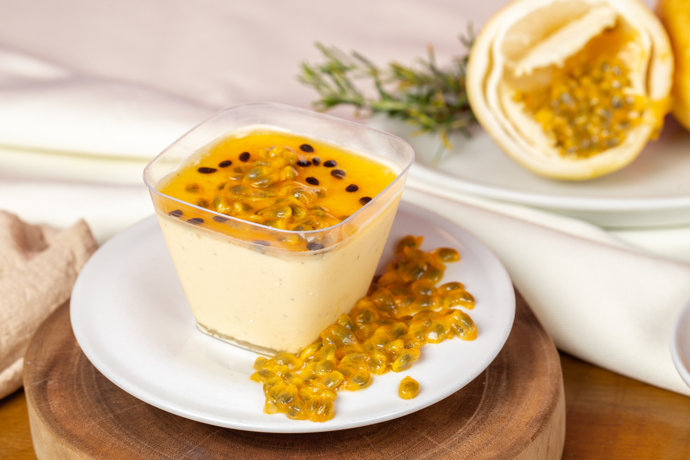

Bem-vindo ao nosso mundo gastronômico, onde os sabores ganham vida e a arte da culinária se une à paixão pela comida! Nosso site é um refúgio para todos os entusiastas da cozinha, sejam chefs experientes ou novatos na arte de cozinhar. Aqui, mergulhamos de cabeça nas delícias que a culinária tem a oferecer, explorando receitas de dar água na boca, dicas e truques que elevam sua habilidade na cozinha e histórias cativantes por trás de cada prato
O bife é o destaque deste prato, e pode ser preparado de diversas maneiras, como grelhado, frito ou assado, dependendo das preferências pessoais. Um bife grelhado, por exemplo, é uma excelente escolha.

A "Feijoada da Casa" é uma generosa porção que traz à mesa uma mistura suculenta de carnes, feijão preto e uma variedade de acompanhamentos que complementam e enriquecem cada garfada
"Mousse de Maracujá" é apreciada por seu equilíbrio de sabores, que combina a acidez do maracujá com a doçura do creme e resulta em uma experiência culinária agradavelmente contrastante.